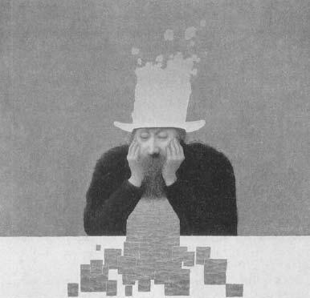
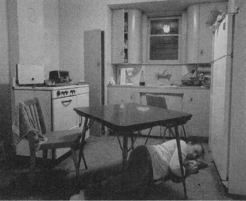

Then there was the day when my son was about two weeks old. He was our first born, and we had been plenty nervous about how demanding parenting was going to be. It had been a great day—he’d slept well through the night, waking up a few times to nurse, and took some long naps during the day that allowed us to do the same. We’d settled into a schedule. My wife did the nursing, and I fetched the tureens of cranberry juice that she had become obsessed with since giving birth. Our son filled his diapers on cue, and his every gesture was confirming how wondrous he was. Things were calm.
Then there was the day when my son was about two weeks old. He was our first born, and we had been plenty nervous about how demanding parenting was going to be. It had been a great day—he’d slept well through the night, waking up a few times to nurse, and took some long naps during the day that allowed us to do the same. We’d settled into a schedule. My wife did the nursing, and I fetched the tureens of cranberry juice that she had become obsessed with since giving birth. Our son filled his diapers on cue, and his every gesture was confirming how wondrous he was. Things were calm.
In the evening, as he slept and we settled into our old routines, like doing dishes (the first time in days), I indulged myself in some editorializing about the human condition. “You know, this newborn business is really quite manageable if you just stay on top of things. You need to work as a team, be organized, roll with the punches.” I went on fatuously like this for a while.
That night, our son woke up to nurse right after we fell asleep. He was fussy, wouldn’t go back to sleep unless I patted him repeatedly, protested each time I tried to stop by waking up. This went on for an insane hour and then he needed to nurse again. Then, after patting him some more, he responded by blowing out his diaper, making a mess of his onesie and me. Then he screamed bloody murder when I washed him off. Finally, he then slept contentedly without patting, for about twenty minutes, before needing to nurse again, another blowout soiling of his fresh onesie, followed by our discovery that we had no clean ones, having neglected to do the laundry.
Rather than doing something useful, I orated in a half-psychotic state, “We can’t do this, we’re going to die, I’m serious, people DIE from lack of sleep, it’s not possible to do this, it’s physiologically proven, we’re all going to DIE.” I swung my arms with emphasis, knocking over and loudly breaking a glass of cranberry juice. This woke up our, by then, happily sleeping son, causing all three of us to burst into tears. He eventually settled down and slept like a baby for the rest of the night, while I tossed anxiously, waiting for him to wake up again.
Contained in this are the two central features of this chapter. Not getting enough sleep is a stressor; being stressed makes it harder to sleep. Yup, we’ve got a dread vicious cycle on our hands.
The Basics of Sleep
All things considered, sleeping is pretty creepy. For a third of your life, you’re just not there, floating in this suspended state, everything slowed down. Except, at points, your brain is more active than when you’re awake, making your eyelids all twitchy, and it’s consolidating memories from the day and solving problems for you. Except when it’s dreaming, when it’s making no sense. And then you sometimes walk or talk in your sleep. Or drool. And then there’s those mysterious penile or clitoral erections that occur intermittently during the night.*
Weird. What’s going on here? To start, sleep is not a monolithic process, a uniform phenomenon. Instead, there are different types of sleep—shallow (also known as stages 1 and 2) sleep, where you are easily awakened. Deep sleep (also known as stages 3 and 4, or “slow wave sleep”). Rapid Eye Movement (REM) sleep, where the puppy’s paws flutter and our eyes dart around and dreams happen. There are not only these different stages, but a structure, an architecture to them. You start off shallow, gradually sleep your way down to slow wave sleep, followed by REM, then back up again, and then repeat the whole cycle about every ninety minutes (and as we’ll see in chapter 14, something goes wrong with the architecture of sleep during a major depression).
Not surprisingly, the brain works differently in different stages of sleep. This can be studied by having people sleep in a brain scanner, while you measure the levels of activity of different brain regions. Take some volunteers, sleep-deprive them for some godawful length of time, stick them in one of these imaging machines, poke them awake a little more while you get a measure of their brains’ activity when they’re awake, and then, snug as a bug in a scanner, let them go to sleep with the scanner running.
The picture during slow wave sleep makes lots of sense. Parts of the brain associated with arousal activity slow down. Ditto for brain regions involved in controlling muscle movement. Interestingly, regions involved in the consolidation and retrieval of memories don’t have much of a decrease in metabolism. However, the pathways that bring information to and from those regions shut down dramatically, isolating them. The parts of the brain that first respond to sensory information have somewhat of a metabolic shutdown, but the more dramatic changes are in downstream brain areas that integrate, associate those bytes of sensory information, and give them meaning. What you’ve got is a metabolically quiescent, sleeping brain. This makes sense, as deep slow wave sleep is when energy restoration occurs. This is shown by the fact that the extent of sleep deprivation is not a great predictor of the total amount you will ultimately sleep, but it is a good predictor of how much slow wave sleep there’ll be—a very active brain or a sleep-deprived brain tends to consume a lot of a particular form of energy; the breakdown product of that depleted form of energy is the signal that biases toward slow wave sleep.
A very different picture emerges during REM sleep. Overall, there’s an increase in activity. Some brain regions become even more metabolically active than when you’re awake. Parts of the brain that regulate muscle movement, brain stem regions that control breathing and heart rate—all increase their metabolic rate. In a part of the brain called the limbic system, which is involved in emotion, there is an increase as well. The same for areas involved in memory and sensory processing, especially those involved in vision and hearing.
Something particularly subtle goes on in the visual processing regions. The part of the cortex that processes the first bits of visual information does not show much of an increase in metabolism, whereas there is a big jump in the downstream regions that integrate simple visual information.* How can this be, when, on top of it, your eyes are closed? This is dreaming.
That tells us something about how dream imagery arises. But something else that happens in the brain tells us something about the content of dreams. There’s a part of the brain, briefly mentioned in the last chapter, called the frontal cortex. It’s the most recently evolved part of the human brain, is disproportionately huge in primates, and is the last part of our brain to fully mature. The frontal cortex is the nearest thing we have to a superego. Starting from toilet training, it helps you to do the harder, rather than easier thing—for example, thinking in a logical, sequential manner, rather than bouncing all over the place cognitively. It keeps you from murdering someone just because you feel like it, stops you from telling someone exactly what you think of their hideous outfit and instead finds something complimentary. The frontal cortex does all this disciplining of you by inhibiting that frothy, emotional limbic system.* If you damage the frontal cortex, someone gets “frontally disinhibited”—doing and saying the things we may think about but would never act upon. During REM sleep, metabolism in the frontal cortex goes way down, disinhibiting the limbic system to come up with the most outlandish ideas. That’s why dreams are dreamlike—illogical, nonsequential, hyperemotional. You breathe underwater, fly in the air, communicate telepathically; you announce your love to strangers, invent languages, rule kingdoms, star in Busby Berkeley musicals.

Alfredo Castañeda, Our Dream (detail), 1999.
So those are the nuts and bolts of sleep. But what is sleep for? You die without it. Even fruit flies do. The most obvious answer is to have a stretch where your brain is going at half speed, in order to build up supplies of energy. Your brain consumes phenomenal amounts of energy to pull off all that calculus and symphony writing that you do—the brain constitutes something like 3 percent of your body weight but needs nearly a quarter of the energy. So stores tend to decline during the day and some solid slow wave sleep is needed to restock those stores (mostly of a molecule called glycogen, which is also an energy store in liver and muscle).*
Others speculate that sleep is for decreasing brain temperature, letting it cool off from all that daytime brainstorming, or for detoxifying the brain. Weirdly, another major reason to sleep is to dream. If you skip a night’s sleep, when you finally get to sleep the next night, you have more REM sleep than normal, suggesting that you’ve built up a real deficit of dreaming. Some extremely difficult studies that make me queasy just to contemplate deprive people or animals of REM sleep preferentially, and the study subjects go to pieces much faster than they do for the equivalent amount of deprivation of other types of sleep.
Thus, this begs the question of what dreaming is for. To work out unresolved issues about your mother? To provide a living for surrealists and dadaists? So you can have a sex dream about some unlikely person in your waking life and then act all weird around that person the next morning by the water cooler? Well, maybe. The marked increase in metabolic activity during REM sleep, and in some of the most inhibited areas of the brain during waking, have suggested to some a sort of “use it or lose it” scenario in which dreaming gives some aerobic exercise to otherwise underutilized brain pathways (that is, the oft-neglected Busby Berkeley musical brain circuit).
What has become clear is that sleep plays a role in cognition. For example, sleep can facilitate problem solving. This is the realm of “sleeping on a problem,” and then suddenly discovering a solution the next morning while you’re cleaning crud out of the corners of your eyes. The neurobiologist Robert Stickgold of Harvard has emphasized that this type of problem solving is the kind where a morass of unhelpful facts are broken through to get to feelings. As he says, you don’t forget a phone number and then “sleep on it” to remember it. You do it for some complex, ambiguous problem.
Both slow wave and REM sleep also seem to play roles in the formation of new memories, the consolidation of information from the previous day, even information that became less accessible to you while awake over the course of the day. One type of evidence supporting this is the fact that if you teach an animal some task and disrupt its sleep that night, the new information isn’t consolidated. While this has been shown in many different ways, the interpretation remains controversial. As we saw in the last chapter, stress can disrupt memory consolidation. As we’re about to see in great detail, sleep deprivation is stressful. Maybe sleep deprivation disrupts memory consolidation merely because of the stress, which wouldn’t prove that sleep normally helps memory consolidation. But the pattern of memory disruption caused by sleep deprivation is different from that caused by stress.
Another type of evidence is correlative. Being exposed to lots of new information during the day is associated with more REM sleep that night. Moreover, the amount of certain subtypes of sleep at night predicts how well new information is recalled the next day. For example, lots of REM sleep during the night predicts better consolidation of emotional information from the day before, while lots of stage 2 sleep predicts better consolidation of a motor task, and a combination of lots of REM and slow wave sleep predicts better retention of perceptual information. Others have taken this further, reporting that it’s not just the amount of some subtype of sleep that predicts some subtype of learning, but whether it occurs early or late in the night.
Another style of evidence for the “sleep helps you consolidate memories” story was first obtained by Bruce McNaughton of the University of Arizona. As we saw in chapter 10, the hippocampus has a central role in explicit learning. McNaughton recorded the activity of single hippocampal neurons in rats, identifying ones that became particularly busy while the rat was learning some new explicit information. That night, during slow wave sleep, it would be those same neurons that would be particularly busy. Taking that one step further, he showed that patterns of activation of hippocampal neurons that occur during learning are then repeated when the animal is sleeping. Brain-imaging studies with humans have shown something similar. There’s even evidence that when consolidation is going on during REM, genes are activated that help form new connections between neurons. During slow wave sleep, metabolism remains surprisingly high in areas like the hippocampus. It’s as if sleep is the time when the brain practices those new memory patterns over and over, cementing them into place.
Weirdly, amid this general picture of sleep deprivation disrupting cognition, at least one type of learning is facilitated by sleep deprivation, as shown in some recent work by a graduate student of mine, Ilana Hairston. Suppose you have some unlikely task where you have to learn to recite the months of the year backward as rapidly as possible. Why is this going to be hard? Because there will repeatedly be the pull to recite the months in the way that you’ve done your whole life, which is forward; the previous, overlearned version of the task interferes with this new reversal task. Who would excel at this task? Someone who has never learned to do January, February, March, etc., automatically in that direction. If you sleep deprive some rats and give them a rat’s equivalent of a reversal task, they do better than do control animals. Why? Because they can’t remember the prior overlearned version of the task well enough for it to intrude now.
So now we have the basics of sleep and what it might be good for. Entrez stress.
Sleep Deprivation
as a Stressor
As we glide down into slow wave sleep, some obvious things occur to facets of the stress-response system. For starters, the sympathetic nervous system shuts down, in favor of that calm, vegetative parasympathetic nervous system. In addition, glucocorticoid levels go down. As introduced back in chapter 2, CRH is the hypothalamic hormone that gets the pituitary to release ACTH in order to trigger adrenal release of glucocorticoids. Some of the hypothalamic control of pituitary hormone release consists of an accelerator and a brake—a releasing factor and an inhibiting factor. For years, there’s been evidence floating around for a hypothalamic “corticotropin inhibiting factor” (CIF) that would inhibit the release of ACTH, counteracting the effects of CRH. No one’s sure what CIF is, or if it really exists, but there’s some decent evidence that CIF is a brain chemical that helps bring on slow wave sleep (called “delta sleep-inducing factor”). Thus, sleep deeply, and you turn off glucocorticoid secretion.
In contrast, during REM, as you’re mobilizing all that energy to generate that outlandish dream imagery and to move your eyes rapidly, glucocorticoid secretion and the sympathetic nervous system rev up again. But given that most of what counts as a good night’s sleep consists of slow wave sleep, sleep is predominately a time when the stress-response is turned off. This is seen in species whether they’re nocturnal or diurnal (that is, sleeping during the dark hours, like us). About an hour before you wake up, levels of CRH, ACTH, and glucocorticoids begin to rise. This is not just because merely rousing from slumber is a mini-stressor, requiring mobilization of some energy, but because those rising stress hormone levels play a role in terminating sleep.
So deprive yourself of sleep, and the sleep-induced decline in the levels of those stress hormones doesn’t occur. And, no surprise, they rise instead. Glucocorticoid levels increase and the sympathetic nervous system is activated; commensurate with everything that’s been reviewed in previous chapters, down go levels of growth hormone and of various sex hormones. Sleep deprivation definitely stimulates glucocorticoid secretion, although not to a massive extent in most studies (unless the sleep deprivation is really prolonged; however, “it is postulated that these increases [in response to severe sleep deprivation] are due to the stress of dying rather than to sleep loss,” dryly noted one journal article).
The elevated glucocorticoid levels during sleep deprivation play a role in breaking down some of the stored forms of energy in the brain. This, along with many of the glucocorticoid effects on memory, could have something to do with why learning and memory are so lousy when you’re sleep-deprived. That’s something we all learned when doing an all-nighter and discovering the next morning during the final exam that we can barely recall what month it was, let alone any of the factoids crammed in our heads the previous night. A recent study beautifully demonstrated one way in which our brains become impaired when we try to think hard on no sleep. Take a normally rested subject, stick her in a brain imager, and ask her to solve some “working memory” problems (holding on to some facts and manipulating them—like adding sequences of three-digit numbers). As a result, her frontal cortex lights up metabolically. Now, take someone who is sleep deprived and he’s awful at the working memory task. And what’s going on in his brain? What you might have guessed is that frontal metabolism would be inhibited, too groggy to get activated in response to the task. Instead, the opposite occurs—the frontal cortex is activated, but so are large parts of the rest of the cortex. It’s as if sleep deprivation has reduced this gleaming computer of a frontal cortex to a bunch of unshaven gibbering neurons counting on their toes, having to ask the rest of their cortical buddies to help out with this tough math problem.
So why care if sleep deprivation is a stressor? It’s obvious. We’re accustomed to all sorts of amenities in our modern lives: overnight deliveries of packages, advice nurses who can be called at two in the morning, round-the-clock technical support staff. Therefore, people are required to work under conditions of sleep deprivation. We’re not a nocturnal species and if a person works at night or works swing shifts, regardless of how many total hours of sleep she’s getting, it’s going against her biological nature. People who work those sorts of hours tend to overactivate the stress-response, and there’s little habituation that goes on. Given that an overactive stress-response makes every page of this book relevant, it is not surprising that night work or shift work increases the risk of cardiovascular disease, gastrointestinal disorders, immune suppression, and fertility problems.
A widely reported study a few years back really brought this into focus. Recall how prolonged stress and glucocorticoids can damage the hippocampus and impair hippocampal-dependent explicit memory. Kei Cho of the University of Bristol studied flight attendants working for two different airlines. On one airline, after you worked a transcontinental flight with major jet lag, you’d have a 15-day break until being scheduled for the next transcontinental flight. In contrast, on Airline #2, presumably with a weaker union, you got a 5-day break before the next transcontinental flight.* Cho controlled for total amount of flying time and total number of time zones shifted in the course of flying. Thus, Airline #2’s crews didn’t experience more total jet lag, just less time to recover. Finally, Cho considered only employees who had been doing this for more than five years. He found that Airline #2’s attendants had, on average, impaired explicit memory, higher glucocorticoid levels, and a smaller temporal lobe (the part of the brain that contains the hippocampus). (This study was briefly alluded to in chapter 10). This is obviously not a good thing for the employees working under these conditions. And this may make it less likely that the flight attendant will remember that 17C requested a mixture of ginger ale and skim milk with ice. But it kind of makes one wonder whether the back-to-the-grind-after-5-days pilot is having trouble remembering whether or not this little ol’ switch turns the engine on or off.
These worries about sleep deprivation are relevant to even those whose 9-to-5 job is 9-to-5 during daylight hours. We have an unprecedented number of ways to make us sleep deprived, beginning with something as simple as indoor lighting. In 1910, the average American slept nine hours a night, disturbed only by the occasional Model T backfiring. We now average 7.5 and declining. When there’s the lure of 24-hour-a-day fun, activities, and entertainment or, for the workaholic, the knowledge that somewhere, in some time zone, someone else is working while you indulge yourself in sleep, that pull of “just a few more minutes,” of pushing yourself, becomes irresistible. And damaging.*
And Stress as a
Disruptor of Sleep
What should happen to sleep during stress? This one’s simple, given a zebra-o-centric view of the world: lion coming, don’t nap (or, as the old joke goes, “The lion and the lamb shall lie down together. But the lamb won’t get much sleep.”). The hormone CRH seems to be most responsible for this effect. As you’ll recall, the hormone not only starts the glucocorticoid cascade by stimulating ACTH release from the pituitary, but it is also the neurotransmitter that activates all sorts of fear, anxiety, and arousal pathways in the brain. Infuse CRH into a sleeping rat’s brain and you suppress sleep—it’s like throwing ice water onto those happily dozing neurons. Part of this is due to the direct effects of CRH in the brain, but part is probably due to CRH activating the sympathetic nervous system. If you go up to high altitude without acclimating, your heart is going to be racing, even when you’re not exerting yourself. This is not because you are stressed or anxious, but simply because your heart has to beat more often to deliver sufficient oxygen. Suddenly you discover that it’s awfully hard to fall asleep with your eyeballs throbbing rhythmically 110 times a minute. So the bodily consequences of sympathetic activation make sleeping hard.
Not surprisingly about 75 percent of cases of insomnia are triggered by some major stressor. Moreover, many (but not all) studies show that poor sleepers tend to have higher levels of sympathetic arousal or of glucocorticoids in their bloodstream.
So, lots of stress and, potentially, little sleep. But stress not only can decrease the total amount of sleep but can compromise the quality of whatever sleep you do manage. For example, when CRH infusion decreases the total amount of sleep, it’s predominantly due to a decrease in slow wave sleep, exactly the type of sleep you need for energy restoration. Instead, your sleep is dominated by more shallow sleep stages, meaning you wake up more easily—fragmented sleep. Moreover, when you do manage to get some slow wave sleep, you don’t even get the normal benefits from it. When slow wave sleep is ideal, really restoring those energy stores, there’s a characteristic pattern in what is called the delta power range that can be detected on an EEG (electroencephalogram) recording. When people are stressed presleep, or are infused with glucocorticoids during sleep, you get less of that helpful sleep pattern during slow wave sleep.
Glucocorticoids compromise something else that occurs during good quality sleep. Jan Born of the University of Lubeck in Germany has shown that if you infuse glucocorticoids into someone while they’re sleeping, you impair the memory consolidation that would normally be occurring during slow wave sleep.

Jeff Wall Insomnia, transparency in lightbox, 1994.
A Causes B Causes A Causes B Causes…
We have the potential for some real problems here, insofar as lack of sleep or poor-quality sleep activates the stress-response, and an activated stress-response makes for less sleep or lower-quality sleep. Each feeds on the other. Does that mean that experiencing even a smidgen of stress, or staying up late once to see Ted Koppel interview Britney Spears about the evidence for and against global warming, and—that’s it, you’re finished—downward spiral of stress and sleep deprivation?
Obviously not. For one thing, as mentioned, sleep deprivation doesn’t cause all that massive of a stress-response. Moreover, the need to sleep will eventually overcome the most stressful of stressors.
Nonetheless, a fascinating study suggests how the two halves might interact, along the lines that the expectation that you’re going to sleep poorly makes you stressed enough to get poor-quality sleep. In the study, one group of volunteers was allowed to sleep for as long as they wanted, which turned out to be until around nine in the morning. As would be expected, their stress hormone levels began to rise around eight. How might you interpret that? These folks had enough sleep, happily restored and reenergized, and by about eight in the morning, their brains knew it. Start secreting those stress hormones to prepare to end the sleep.
But the second group of volunteers went to sleep at the same time but were told that they would be woken up at six in the morning. And what happened with them? At five in the morning, their stress hormone levels began to rise.
This is important. Did their stress hormone levels rise three hours earlier than the other group because they needed three hours less sleep? Obviously not. The rise wasn’t about them feeling rejuvenated. It was about the stressfulness of anticipating being woken up earlier than desirable. Their brains were feeling that anticipatory stress while sleeping, demonstrating that a sleeping brain is still a working brain.
What might be happening, then, if you go to sleep thinking that not only will you be woken up earlier than you would like, but at an unpredictable time? Where any minute could be your last minute of sleep for the night? It’s quite possible that stress hormone levels will be elevated throughout the night, in nervous anticipation of that wake-up call. As we’ve seen, with an elevated stress-response during sleep, the quality of the sleep is going to be compromised.
Thus, there is a hierarchy as to what counts as miserable sleep. Continuous, uninterrupted sleep, but too little of it—deadline looming, go to sleep late, get up early, not good. Even worse is too little sleep that is fragmented. As an example, I once did an experiment where every three hours for days I had to take blood samples from some animals. Even though I did next to nothing on these nights and days other than sleep, in fact I got more total sleep per day than was usual for me, I was a wreck. But worst of all is too little sleep that is unpredictably fragmented. You finally get back to sleep, but with the corrosive knowledge that five hours or five minutes from now, another patient will come into the emergency room, or the alarms will go off and it’s back to the fire truck, or someone’s diaper will slowly but surely fill up.
This teaches us a lot about what counts as good sleep and how stress can prevent it. But as we’ll see in a couple of chapters, this generalizes beyond sleep. When it comes to what makes for psychological stress, a lack of predictability and control are at the top of the list of things you want to avoid.